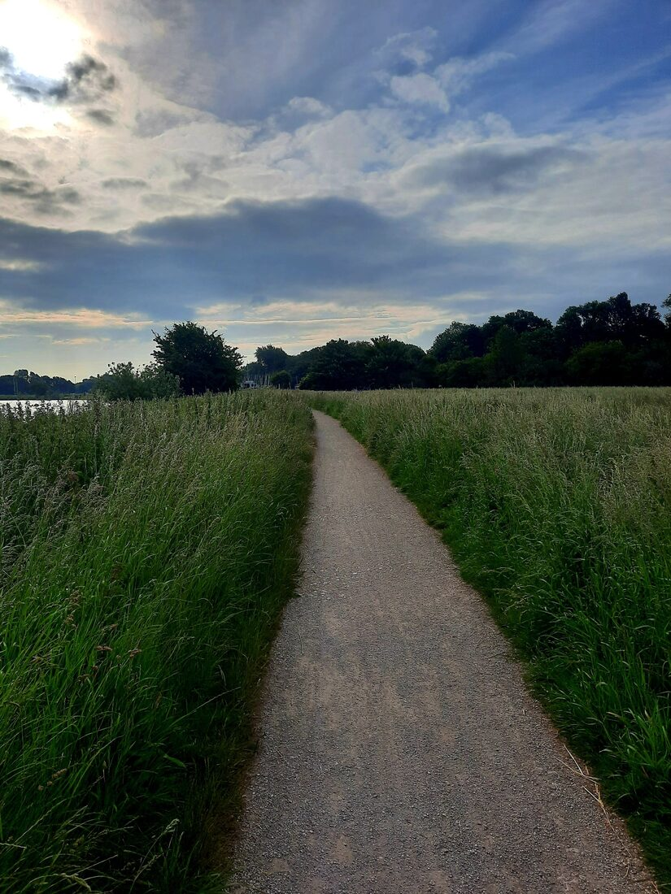
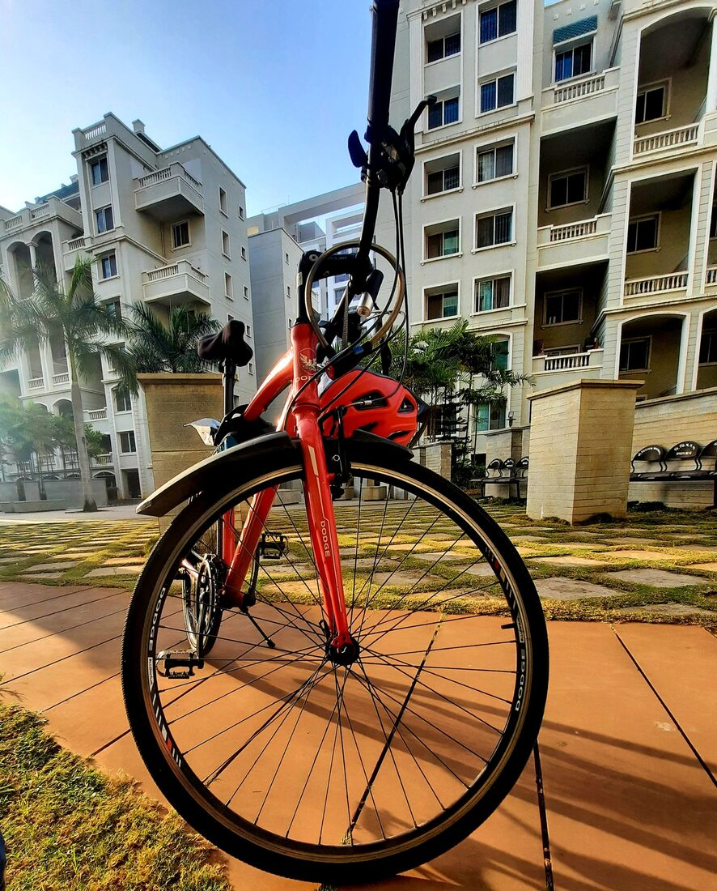
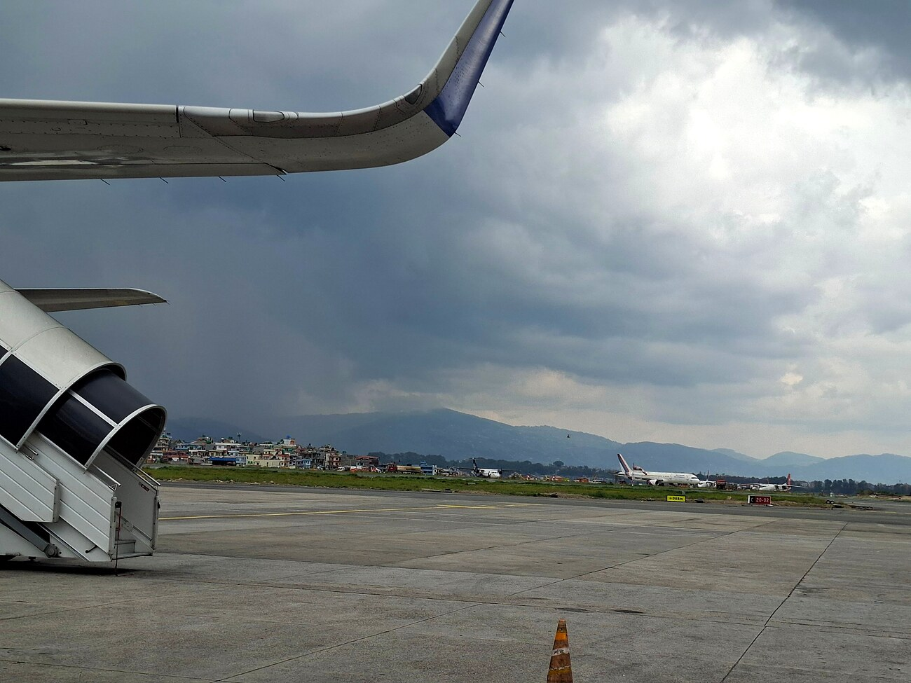

Personal
Outside of research — running, cycling, and an interest in aviation safety
Running
I've completed a few half marathons, and running has become a reliable way to think through a problem away from a screen — some of my better ideas about identification strategy have shown up a few kilometres into a run rather than at a desk.

Cycling
Recreational cycling, usually early mornings — forest roads after rain, quiet streets before a city wakes up. It's been a constant since long before any of the research: training wheels came off a long time ago, but the habit of just getting out on two wheels never really left.

Aviation
A long-standing interest in commercial aviation, specifically the protocols and safety standards that keep it as safe as it is. The same curiosity is part of what drew me to write about the Boeing 737-MAX case: how an industry's formal safety systems interact with the informal, organisational pressures that can erode them, and what that implies for regulation and oversight more broadly.
